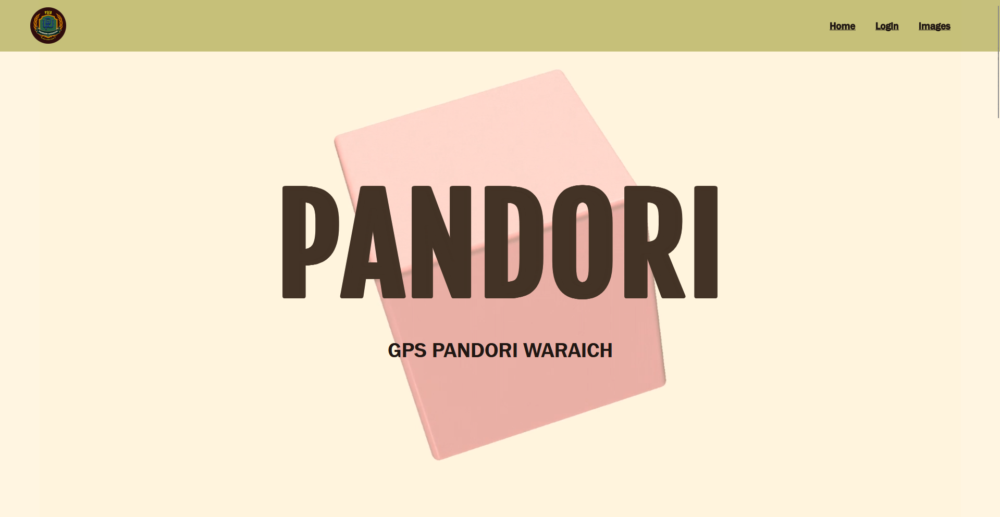

A centralized ERP solution for mid-scale schools, replacing manual paperwork with a dynamic, role-based system for managing academic records and student performance.

Manual grading and record-keeping lead to data redundancy and slow updates. Teachers often struggle with fragmented systems that require constant page refreshes for simple data entry.
Built on the MVC pattern using Node and Express, Pandori focuses on 'Single Page Interaction' for data entry. By utilizing Fetch APIs, I enabled teachers to update marks without losing their place on the student list.
Designed a relational-style MongoDB schema to map students to specific classes and sections, allowing for rapid querying of group data.
Developed custom endpoints to handle asynchronous CRUD operations, ensuring the server handles high-volume updates efficiently.
Implemented EJS templates with client-side JavaScript to intercept form submissions, providing immediate visual feedback upon record updates.
By optimizing the backend to serve lightweight JSON responses instead of full page re-renders, the system latency was reduced by 40% during peak usage hours.